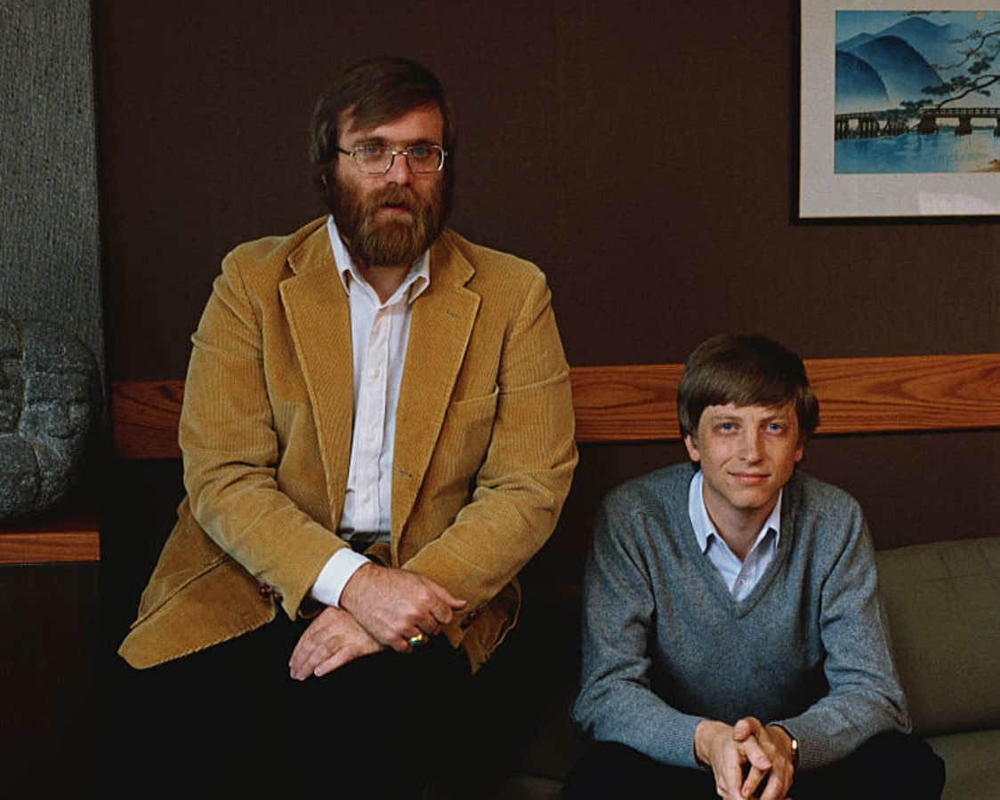
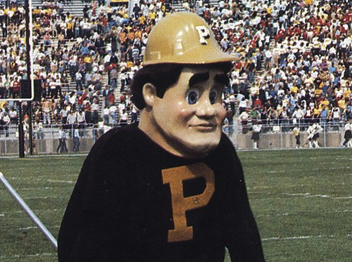

Microsoft
Bill Gates (b. 1955) founded Microsoft in 1975 with his childhood friend Paul Allen, while still a student at Harvard University. The origin of the company was to develop and market BASIC interpreters for the Altair 8800, a microcomputer designed in 1974 and based on the Intel 8080 processor.

Purdue Pete
Purdue Pete (1940-) is many things. A cultural icon, a teen heartthrob, a fashionable lad, a heartbreaker, a teenage mutant ninja turtle, a podcaster, a Swiftie... to name a few. But he is *not* a tech innovator OR entrepreneur! Replace this entry with your Computer Science icon during the Git workshop!